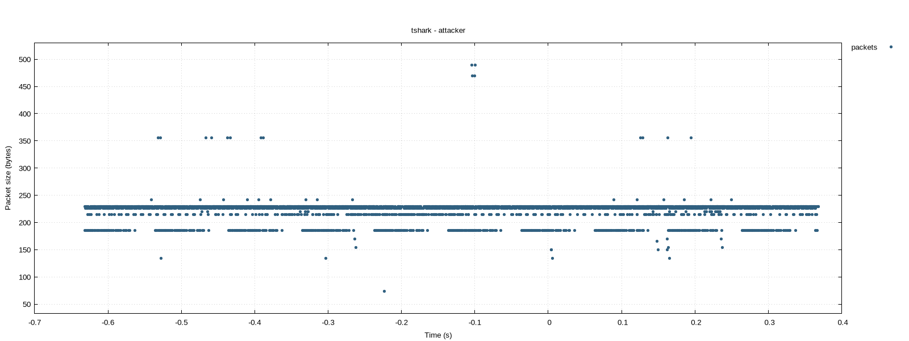
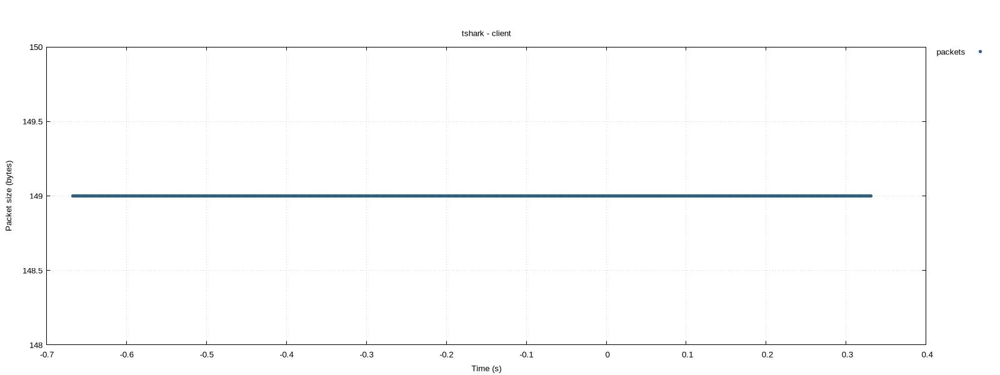
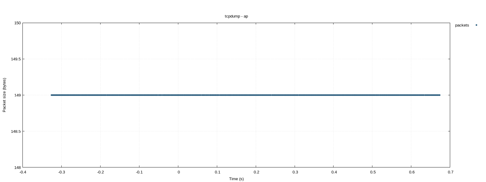

\n";
else
f << "
\n";
else
f << " Graph not available (gnuplot missing or state log not found).
\n"; f << R"html(Visual output of the *_graph observer functions using real captured test data.
Observers without a graph function (dmesg, trace_cmd,
mausezahn) produce raw logs only and are not shown.
tshark_graphPacket size over time from real pcap captures (mc_mitm scenario).
X axis: relative time (s), Y axis: frame length (bytes).
Extracted with tshark -T fields -e frame.number -e frame.time -e frame.len.

Graph not available.

tcpdump-captured pcap converted to CSV with tshark, visualised via times_packet_sizes_from_csv.

\n";
else
f << " Graph not available (gnuplot missing or state log not found).
\n"; f << R"html(generate_resource_graphCPU core usage (%) and free RAM (KB) logged remotely via awk, plotted with gnuplot.
TODO: get real data
generate_station_graphConnected station count sampled via iw dev station dump.
TODO: get real data
iperf_log_to_xyBidirectional throughput (Mbits/sec) from a real bl0ck BAR attack run. AP-server RX (red) and client TX (blue) on Y2 axis (0–15 Mbits/sec). The drop to zero marks when the BAR attack disrupted the Block ACK session.
Graph not available (gnuplot missing or iperf log not found).